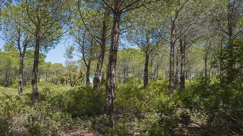

DERNIERS ARTICLES
SOCIÉTÉ
L’Assemblée nationale adopte le projet de loi d’urgence agricole
SCIENCE
Découverte d’un volcan inconnu au large des côtes siciliennes
SOCIÉTÉ
Le tarif agent d’EDF, un avantage coûteux selon la Cour des comptes
TECH
Recherche sur les moustiques pour enrayer les maladies virales
SOCIÉTÉ
Résultats du baccalauréat 2026 : une légère baisse du taux de réussite

SOCIÉTÉ
La loi sur la protection de la nature fête ses 50 ans
À LIRE AUSSI
01
SOCIÉTÉ
02
Découverte de graffitis à Pompéi révélant la vie quotidienne
SANTÉ
03
L’approche One Health pour une meilleure santé globale
ENVIRONNEMENT
04
Pompiers volontaires : sentiment d’épuisement et de manque de reconnaissance
ÉCONOMIE
05
Dépendance économique de l’Europe : le plaidoyer de l’économiste Jean Pisani-Ferry
SCIENCE
06
Une technique simple pour communiquer avec les chats
TECH
TikTok renforce la détection des vidéos générées par IA
NEWSLETTER
Le résumé du jour dans votre boîte mail